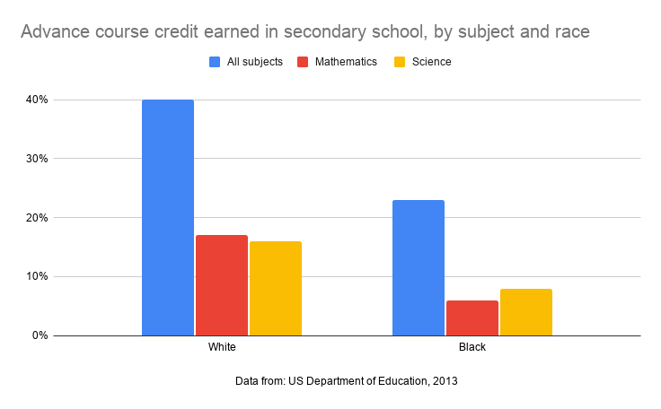

In the days of slavery, education for black people was forbidden. When slavery was abolished, education was allowed for black people in the 1800s. However, at that time, schools existed separately for different races. However, the Brown v. Board of Education decided in 1954 that co-education between blacks and whites would be allowed. However, even then, the black students rate was recorded to be only 0.1% of the whole school student ratio. Over the years, there has been significant improvement in these numbers. According to the data taken in 1994, the ratio of black students in public schools was 17% , indicating that it has been improving since 1954.

However, there are still disparities amongst black people within education.
The graph represents the credit acquisition rate for each subject in middle schools according to race.
Looking at the figures for blue (representing all subjects), we can see that the acquisition rate for white people is 40%, while that for blacks is about half, 20%.
In addition, the US Department of Education reported in 2013 that non-Hispanic whites earned twice as much science credit, and 2.8 times as many math credit compared to black students.
Furthermore, according to the U.S. Census Bureau, the overall view of 25-year-olds with a bachelor's degree in 2019 was reported to be 26.1% for blacks compared to 40.1% for whites.
Although it has risen from the 19.8% recorded in 2010 (for whites, it was 33.2%), it can be seen that the acquisition rate of credits is still higher for white students.
Also, we are able to understand that disparity is even worse considering that only 14.6% of the US population (population: about 329 million, blacks: 37.69 million) is black people.
Disparities in education also affect disparities in other situations.
On the employment discrimination page, I briefly mentioned that there is a difference in salary due to the influence of educational disparity.
Education disparity is also affected by other disparities, such as high poverty rates for black people.
From this, we can understand that when there is a difference in one factor, it will affect various factors as well . This reason is also one of the reasons why discrimination is difficult to eliminate.